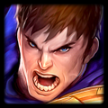

Garen
Armor/Magic resist items (Gargoyle/Bramble/Dragon Claw)
Utility items (Ionic Spark/Evenshroud/Sunfire)
Examples :
Warmog + Sunfire + Redemption
Warmog + Sunfire + Dragon claw
Warmog + Redemption + Bramble
Giant sized (Max HP) = Protective Shielding (Max Health Shield)
Must play 2+ Watchers Can play 4 Emissary